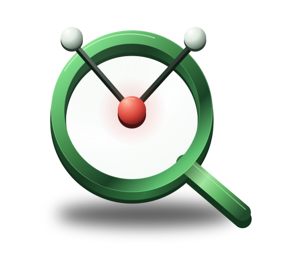

AI AGENT ROOT-CAUSE DEBUGGING
Your agent failed.
Find the decision
that caused it.
Turn messy agent traces into a root-cause diagnosis. See the failed step, why it happened, and what to change.
pip install runlensPublished package. Latest beta fixes? Install from source.

The tool’s error points to query_db.
Follow the failure upstream.
The last error is a symptom. Find the first wrong turn.
“Find the renewal status for customer C17 using local records.”
Illustrative run · simulated timing · no customer dataStep 02 / tool call
SELECT A STEP ABOVE- INPUT
{"query": "customer C17 renewal status"}- OUTPUT
{"status": "error", "error": "Customer records are only available in query_db."}
ROOT CAUSE
Tool selection.
- FAILED STEP
- 02 / search_web
- CONFIDENCE SCORE
- 0.85 / observed
Evidence strength, not a calibrated probability. Heuristic source.
- WHY
- The request requires an internal customer record. The agent chose
search_web, whose error explicitly namesquery_dbas the correct source. - EVIDENCE / STEP 02
- “Customer records are only available in query_db.”
- CHANGE THIS
- Route customer lookups to
query_db. Give it the description “Retrieve internal customer records by ID.” Reservesearch_webfor public information.
Step 4 repeats the wrong route. Fix the selection at step 2 first.
$ agentlens diagnose <run_id>CLI equivalent
ROOT CAUSE tool_selection FAILED AT Step 2 (search_web) SOURCE Heuristic fallback WHY The tool error directs customer lookups to query_db. FIX Route this operation to query_db and clarify tool descriptions. SCORE 0.85 (evidence strength; not a calibrated probability)
Interactive illustration of the local demo’s routing failure, extended with a retry. No live model call. When evidence is insufficient, AgentLens reports uncertainty.
What went wrong?
Six patterns. Inspect the evidence each one needs.
TOOL SELECTION / ILLUSTRATIVE PATTERN
local recordsearch_webuse query_dbThe wrong route is in the evidence.
A tool error explicitly redirects the operation to another tool. Similar descriptions alone do not prove the selection was wrong.
FIXSeparate the tools’ supported operations, then route this lookup to query_db.
Also checks supported tool schemas for missing fields and undeclared tools. Detection limits ↗
DIRECT CAPTURE / SCOPED LANGGRAPH SUPPORT
Debug the agents
you’re already building.
AgentLens works alongside the tools you already use
to build, run, and debug AI agents.
VIA SUPPORTED PROVIDER CALLS / CONDITIONAL
OpenAI Chat Completions/Responses and Anthropic Messages through supported SDK methods. LangGraph requires patching before compilation; node capture is limited to updates mode.
CrewAI, AutoGen, and PydanticAI are conditional on those provider calls. No verified native framework coverage or partnerships implied. Exact support ↗
Your traces.
Your machine.
AgentLens stores traces and runs default diagnosis locally. Your run, ready to inspect.
.agentlens/runs/<run_id>.jsonRemote diagnosis is an explicit choice. It sends a compact, redacted trace to your selected provider. Your agent’s own API calls still use that provider.
Before you share a trace
Anonymization removes common credentials and sensitive values on a best-effort basis. Review exports manually. Preparing an export does not upload it.
For developers and teams investigating real agent failures.
Find what broke
before reading
another trace.
pip install runlensLocal by default · Open source · MIT licensed
The published release may lag the current beta. Install from source for the latest fixes.
Source installation
Python 3.9+. Use a virtual environment.
git clone https://github.com/agentlens-hq/agentlens.git cd agentlens python -m venv .venv source .venv/bin/activate python -m pip install -e ".[openai,anthropic]" agentlens doctor agentlens demo --no-browser
Windows: activate with .venv\Scripts\activate. The demo is offline and simulated. Capture your own run ↗